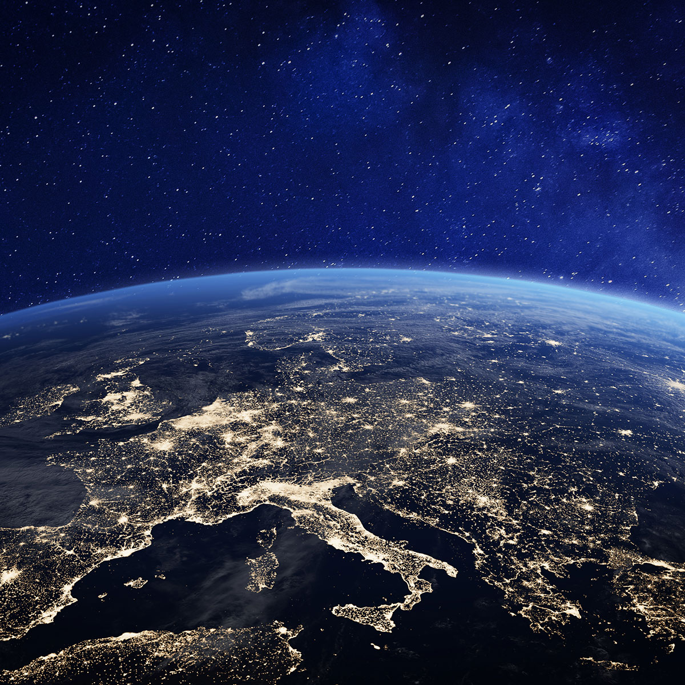

Föld


A Föld, vagy „kék bolygó” a harmadik bolygó a naptól. Az emberiség élőhelye. Kontinensek és óceánok alkotják feszínét. A föld egyetlen holdja „vezérli” az ár-apály jelenséget az óceánokban. Egy nagyon változatos bolygó. A föld az egyetlen olyan ismert bolygó, amin tudjuk, hogy élet van jelen.
- Nap körüli keringési ideje: 365 + 1/4 nap
- Holdja: Hold
- Térfogata: 1,0832073 x 1012 km3
- Tömege: 5,9736 x 1024 kg
- Légköre: Van
- Felszíni gravitáció: 9,81 m/s2